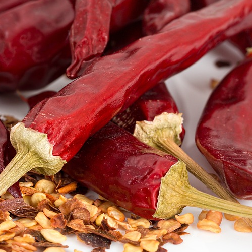
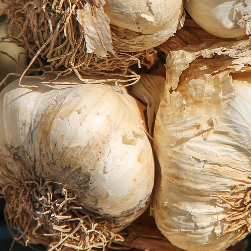
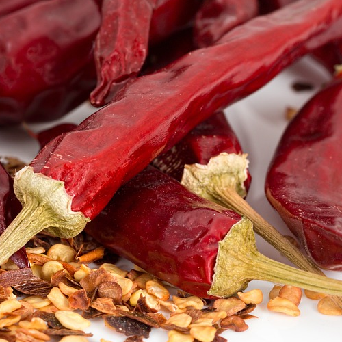
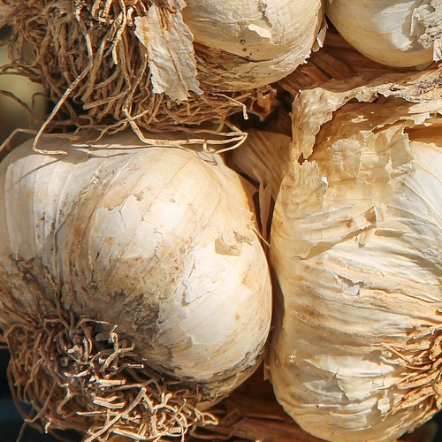

Aglio, olio e peperoncino defines Italian food like no other. Its simplicity, focusing on quality ingredients and letting their flavors shine through is what is most important in Italian cooking. This dish is a perfect example of how a few simple components can come together to create a masterpiece.
Serves 2 people
all rights goes to Luna Trapani